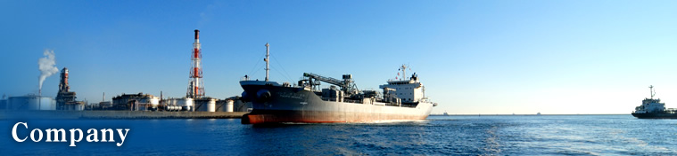

| Dec 1917 | Azuma Shipping Co., Ltd. was established and started lighter transportation in Tokyo bay as an exclusive operator for Yamashita Steamship Co., Ltd. |
|---|---|
| Aug 1951 | Registered as a port harbor company at 6 ports, i.e. Keihin, Yokosuka, Moji, Yahata, Tokuyama and Tsukumi under the Port Transport Business Act (effective from May of the year; later in Dec. 1962, a revision of the Act effected the switch to a licensing system). |
| Aug 1952 | M.S."Ryuyo Maru" was purchased and started maritime transportation of the products of Onoda Cement Co., Ltd. (Now, TAIHEIYO CEMENT CORPORATION). |
| Nov 1955 | Harada Niyaku Co., Ltd. (now, an affiliate accounted for using equity method) was established to be fully entrusted for the Company's coastal operations at Tokyo Bay. |
| Dec 1956 | Azuma Kogyo Co., Ltd. (now, Azuma Kaiun Shoji Co., Ltd. now, a consolidated subsidiary) was established to handle insurance agency and other businesses. |
| May 1962 | Licensed to operate warehousing. |
| Feb 1969 | Mutsumi Shipping Co., Ltd. and Chuo Transport Co., Ltd. were merged into the Company. |
| Sep 1969 | Licensed to operate coastal transportation (Class 1 entity). |
| Apr 1970 | Licensed to operate customs clearance. |
| May 1973 | Licensed to operate renting or leasing of coastal ships. |
| Oct 1988 | Eastern Marine System Co., Ltd. (now, a consolidated subsidiary) was established to make the Company's cement shipping more competitive. |
| May 1989 | Shares in Kinki Transport & Terminal Co., Ltd. (now, a consolidated subsidiary) were taken over to strengthen the base for harbor transportation in the Hanshin area. |
| Jun 1991 | SIAM AZUMA MULTI-TRANS CO., LTD. (now, a non-consolidated subsidiary accounted for using equity method) was established in Thailand as a central base in Southeast Asia for international freight forwarding. |
| Feb 1993 | Toyu Co., Ltd. (now,Azuma Logitec co.,Ltd. now, a consolidated subsidiary) was established to expand land transportation in the Keihin area. |
| Apr 1994 | International Transport Division and Maritime Transport Division were organized. |
| Oct 1994 | Yokohama Liquefied Gas Terminal Co., Ltd. (now, an affiliate accounted for using equity method) was established through joint investment with IWATANI CORPORATION. |
| Sep 1999 | Licensed to operate industrial waste collection and transport. |
| Apr 2000 | Keihin Business Division was organized. |
| Nov 2000 | AZM Marine S.A. (now, a consolidated subsidiary) , an overseas subsidiary, was established in Panama for the purpose of overseas transportation of cement. |
| Jul 2003 | Ferry Transportation Division, Kanto Business Division, Chubu-Kansai Business Division (now, Chubu Business Division), Kyushu Business Division and Tokyo Land Transportation Division were organized. |
| Oct 2005 | Obtained ISM Code (International Safety Management Code) for the ship management of international ships. |
| Jan 2006 | Buzen Kaihatsu Co., Ltd. and Kubota Kaiun Co., Ltd. were merged to establish Buzen Kubota Kaiun Co., Ltd (now, a consolidated subsidiary) to strengthen the business base. |
| Mar 2006 | Listed on the second section of the Tokyo Stock Exchange. |
| Mar 2007 | Listed on the first section of the Tokyo Stock Exchange. |
| Apr 2007 | AZUMA CIS, LLC, an overseas subsidiary, was established in Moscow, Russia, to acquire more commercial rights in the CIS. Tandem Global Logistics (NL) B.V. was established through joint investment in Netherlands to reinforce the NVOCC network and to improve quality and expand volume of international multimodal transportation. |
| May 2007 | Tandem Holding (HK) Ltd. (now, an affiliate accounted for using equity method) , a holding company, was established though joint investment in Hong Kong for integrated management of Tandem Global Logistics (HK) Ltd. in Hong Kong and Tandem Global Logistics (SHANGHAI) Ltd. in Shanghai, both overseas subsidiaries, in order to improve quality and expand volume of international multimodal transportation. In order to strengthen land transportation in Thailand, the land transportation division of Siam Azuma Multi-Trans Co., Ltd. was spun off into Azuma Transport Services (Thailand) Co., Ltd. (now, a non-consolidated subsidiary accounted for using equity method). |
| Feb 2008 | Trans Russia Agency Japan Co., Ltd. (now, an affiliate accounted for using equity method) was established through joint investment to reinforce the agency service for ship agencies operating between Japan and Russia. |
| Dec 2008 | Stock of Kanto Air Cargo Co. (now, a consolidated subsidiary) , Ltd. was acquired with the view of strengthening and expanding domestic logistics businesses. |
| Jun 2010 | Tandem Global Logistics (Japan) Co., Ltd. (now a consolidated subsidiary) was established through joint venture with KSA International Inc. to further promote and expand the operation of the Tandem businesses in Japan and to meet domestic demand for air freight services. |
| Oct 2011 | Azuma Shipping Mongolia LLC and Tandem Global Logistics Mongolia LLC were established to expand business in Mongolia. As part of the development of new businesses, Azuma Shipping (Qingdao) Co., Ltd., an overseas subsidiary, was established in Qingdao in order to secure a new operational base in the Northern China area as well as to promote various logistics businesses. |
| Apr 2012 | Toyu Co., Ltd. changed its trade name to Azuma Logitec Co., Ltd. |
| Jul 2012 | The business under the Ferry Transportation Division of the Company was transferred to Azuma Logitec Co., Ltd. to enhance the efficiency of business, and of management through improvement of financial strength and other measures. |
| Aug 2012 | AZUMA FARM MIE, a cherry tomato plant factory, was constructed in Tsu, Mie in order to verify the agriculture business. |
| Mar 2014 | Certified as an AEO（Authorized Economic Operator）Warehouse Operator by Tokyo Customs. |
| May 2016 | Certified as an AEO（Authorized Economic Operator）Customs Broker by Tokyo Customs. |
| Apr 2017 | The Business Headquarters Division was established, integrating with the International Transportation Division, in order to improve the Group’s sales operation and maximize the Group profit. |